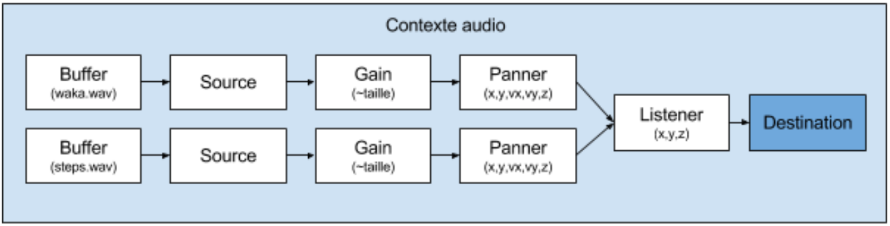

Spatialisation du son

Son de pas par défaut
Son de pac-man joué pour un petit objet
Son de "voiture" joué pour un petit objet se déplaçant vite
Effet doppler (Firefox)
L'intensité du son dépends de la distance au centre de l'image
next